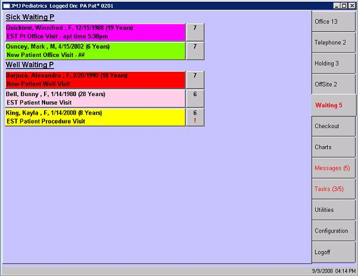

|
In this solution...
- Description
- Want to Learn More?
- Related Solutions
- Related Education Opportunities
Description
Each encounter has both an encounter type and encounter description. The encounter description is specific to an individual encounter. The encounter description defaults from the encounter type, but it can be manually changed, if desired.
The encounter description is what shows on the Waiting Room lists, the encounter list on the Patient Chart and on encounter reports.

 TIP: Some practices like to use the encounter description field to communicate specific information to the clinical staff. For example, the front desk and clinical staff can work out a series of meaningful symbols or notations to indicate which patients are ready to be seen. If a new patient has been checked in but still needs to complete paperwork, the front desk person can add a symbol or word to indicate when the patient is ready. Likewise, if a patient arrives very early or very late for their appointment, the appointment time can be added to the description to give the clinical staff more information about which patient to take back next. TIP: Some practices like to use the encounter description field to communicate specific information to the clinical staff. For example, the front desk and clinical staff can work out a series of meaningful symbols or notations to indicate which patients are ready to be seen. If a new patient has been checked in but still needs to complete paperwork, the front desk person can add a symbol or word to indicate when the patient is ready. Likewise, if a patient arrives very early or very late for their appointment, the appointment time can be added to the description to give the clinical staff more information about which patient to take back next.
The example above shows two encounters with the encounter description modified to indicate certain information to the clinical staff about those patients in the Waiting Room. Winnifred Quicktest has arrived 1.5 hours early for her appointment. Mark Quincey is a new patient and the clinical staff understands that ## means that he has completed his paperwork and is ready to be seen.
|